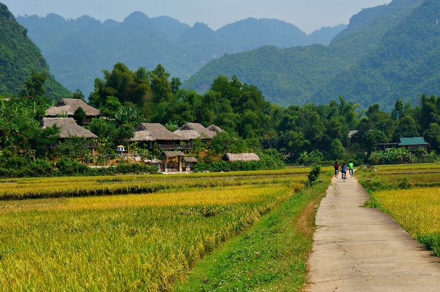
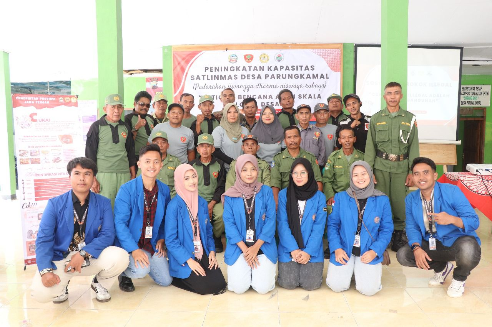

Kegiatan dan potensi desa

Peternakan Kambing
Edukasi dan Pemberian ternak kambing kepada generasi muda dan masyarakat

Potensi Pertanian Desa
Potensi pertanian desa Parungkamal yang begitu luas karena letak geografis yang strategis

Satlinmas
Peningkatan Satlinmas Desa parungkamal